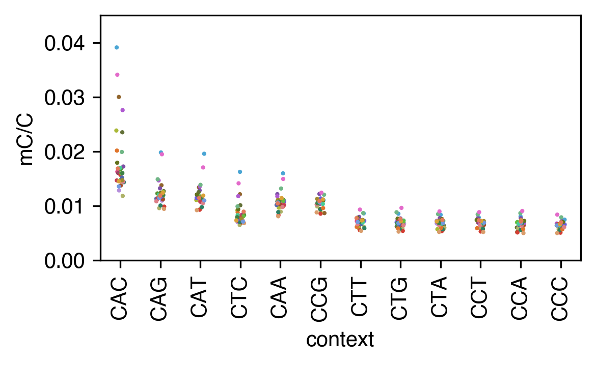

mCH trinucleotide context (Fig 3B)#
Non-CG methylation broken down by trinucleotide context (CAC, CAG, …) across major cell types, and identification of the cell types with the highest mCA.
Note: the lambda-spike-in-normalized context heatmaps (a tentative Fig S16) are not reproduced here — the published values/styling could not be matched, so that analysis is omitted.
📥 Required input files#
{ENTEX_ROOT}/analysis/mC_context/L2any-donor/*.context.tsv· per-cluster trinucleotide-context counts{ENTEX_ROOT}/clustering/merged/group_meta.tsv· cluster → major-type map{ENTEX_ROOT}/L1color.tsv· major-type colors (provided){ENTEX_ROOT}/merged_allc/cluster_donor.mcds· single-cell mC matrix (for the mCA-region step)
# === Reproduction setup — edit ENTEX_ROOT / REF_ROOT for your machine ===
import os, sys
ENTEX_ROOT = os.environ.get('ENTEX_ROOT', '/large_storage/zhoulab/zhoujt/project/ENTEx')
REF_ROOT = os.environ.get('REF_ROOT', '/large_storage/zhoulab/ref')
BOOK_ROOT = os.environ.get('BOOK_ROOT', f'{ENTEX_ROOT}/analysis/HumanCellEpigenomeAtlas')
sys.path.insert(0, BOOK_ROOT)
os.chdir(f'{ENTEX_ROOT}/analysis') # original working directory
import repro_guard # no-overwrite guard (default: skip existing)
[repro_guard] active — READ-ONLY (all writes skipped; inline figures still render)
import numpy as np
import pandas as pd
import seaborn as sns
import matplotlib as mpl
import matplotlib.pyplot as plt
from glob import glob
import anndata
import scanpy as sc
import scanpy.external as sce
from sklearn.preprocessing import normalize
from sklearn.metrics import pairwise_distances, roc_auc_score
mpl.style.use('default')
mpl.rcParams['pdf.fonttype'] = 42
mpl.rcParams['ps.fonttype'] = 42
mpl.rcParams['font.family'] = 'sans-serif'
mpl.rcParams['font.sans-serif'] = 'Helvetica'
import warnings
warnings.filterwarnings("ignore")
indir = f'{ENTEX_ROOT}/'
file_list = np.sort(glob(f'{indir}analysis/mC_context/L2any-donor/*.context.tsv'))
Build the trinucleotide-context methylation matrix#
Read per-cluster context counts and assemble cluster × context mc/cov tables (non-N contexts), cached to L2any-donor_context.hdf.
group_meta = pd.read_csv(f'{indir}clustering/merged/group_meta.tsv', sep='\t', header=0, index_col=0)
# group_meta = group_meta[['L2_any', 'L1', 'count']]
group_meta['L1_annot'] = group_meta['L1_annot'].str.replace(' ','-').str.replace('/','_')
annot2L1 = group_meta[['L1','L1_annot']].set_index('L1_annot')['L1'].to_dict()
L1annot = group_meta[['L1','L1_annot']].set_index('L1')['L1_annot'].to_dict()
mc, cov, cluster = [], [], []
for file in file_list:
tmp = pd.read_csv(file, index_col=0, header=None, names=['context', 'mc', 'cov'], sep='\t')
mc.append(tmp['mc'])
cov.append(tmp['cov'])
cluster.append(file.split('/')[-1].split('.')[0])
mc = pd.concat(mc, axis=1)
mc.columns = cluster
cov = pd.concat(cov, axis=1)
cov.columns = cluster
selc = np.array([('N' not in xx) for xx in mc.index])
mc = mc.loc[selc].T
cov = cov.loc[selc].T
mc.to_hdf('mC_context/L2any-donor_context.hdf', key='mc')
cov.to_hdf('mC_context/L2any-donor_context.hdf', key='cov')
Fig 3B — mCH by trinucleotide context across major types#
Aggregate to major-type level (CH contexts only) and plot mC/C per context, one dot per non-neuronal major type.
selch = np.array([(xx[:2]!='CG') for xx in mc.columns])
groupL1 = pd.Series(mc.index.str.split('-').str[0], index=mc.index)
mc_L1 = mc.groupby(groupL1).sum().loc[:, selch]
cov_L1 = cov.groupby(groupL1).sum().loc[:, selch]
colors = pd.read_csv(f'{indir}L1color.tsv', sep='\t', header=0, index_col=0)['color'].to_dict()
# per-major-type (L1) mCH/CH by context, reshaped long for plotting
tmp = (mc_L1 + 1) / (cov_L1 + 1)
tmp.index.name = 'L1'
tmp = tmp.stack().reset_index()
selc = tmp['L1'].isin(['c10', 'c16', 'c31']) # exclude neurons (plotted separately)
leg_order = tmp.groupby('context')[0].mean().sort_values().index[::-1]
fig, ax = plt.subplots(figsize=(4, 2.5), dpi=300)
sns.stripplot(data=tmp.loc[~selc], x='context', y=0, hue='L1', palette=colors,
order=leg_order, ax=ax, edgecolor='none', s=2)
ax.set_ylim([0, 0.045])
ax.set_yticks(np.arange(0, 0.05, 0.01))
ax.set_xticks(np.arange(selch.sum()))
ax.set_xticklabels(leg_order, rotation=90)
ax.set_ylabel('mC/C')
ax.get_legend().remove()
fig.tight_layout()
fig.savefig('mCH_distribution/L1_context_scatter.pdf', transparent=True)

High-mCA cell types → per-bin CA methylation ratio#
Identify the L2any clusters with the highest non-CG methylation (top-2 per major type, mCA/CA > 0.025, above the lambda spike-in background) and extract their genome-wide per-1 kb-bin CA methylation ratio. The output L2any_mCA_025_top2_rawratio.hdf feeds the downstream characterization of high-mCA genomic regions (high-CA vs low-CA domains).
(Re-run caveat: this step reads the cluster-donor mcds, whose cell index differs from group_meta; it documents the method but needs the matching index to re-execute from scratch.)
# the 24 clusters selected above (top-2 highest-mCA per major type)
selc = pd.Index(['c12-c10', 'c13-c5', 'c13-c9', 'c14-c1', 'c14-c2', 'c14-c3', 'c14-c6',
'c14-c7', 'c21-c8', 'c25-c10', 'c26-c10', 'c31-c0', 'c31-c1', 'c31-c2',
'c31-c3', 'c31-c4', 'c31-c5', 'c31-c6', 'c31-c7', 'c32-c2', 'c5-c1',
'c5-c2', 'c5-c5', 'c5-c9'])
from ALLCools.mcds import MCDS
mcds = MCDS.open(f'{indir}merged_allc/cluster_donor.mcds', var_dim='chrom1k')
mcds
<xarray.MCDS> Size: 93GB
Dimensions: (cell: 940, chrom1k: 3088298, count_type: 2, mc_type: 4)
Coordinates:
* cell (cell) <U16 60kB 'c0-c0-PT-1JKYN' ... 'c9-c9-STL003'
* chrom1k (chrom1k) <U12 148MB 'chr1_0' 'chr1_1' ... 'chrY_57227'
chrom1k_chrom (chrom1k) <U5 62MB ...
chrom1k_end (chrom1k) int64 25MB ...
chrom1k_start (chrom1k) int64 25MB ...
* count_type (count_type) <U3 24B 'mc' 'cov'
* mc_type (mc_type) <U3 48B 'CAN' 'CCN' 'CGN' 'CTN'
Data variables:
chrom1k_da (cell, chrom1k, mc_type, count_type) uint32 93GB dask.array<chunksize=(1, 386038, 1, 1), meta=np.ndarray>
Attributes:
obs_dim: cell
var_dim: chrom1kmcds = mcds.assign_coords(L2_any=('cell', group_meta.loc[mcds.get_index('cell'), 'L2_any']))
mcds = mcds.groupby('L2_any').sum()
mcds = MCDS(mcds, obs_dim='L2_any', var_dim='chrom1k')
---------------------------------------------------------------------------
KeyError Traceback (most recent call last)
Cell In[16], line 1
----> 1 mcds = mcds.assign_coords(L2_any=('cell', group_meta.loc[mcds.get_index('cell'), 'L2_any']))
2 mcds = mcds.groupby('L2_any').sum()
3 mcds = MCDS(mcds, obs_dim='L2_any', var_dim='chrom1k')
File ~/.conda/envs/analysis/lib/python3.10/site-packages/pandas/core/indexing.py:1097, in _LocationIndexer.__getitem__(self, key)
1095 if self._is_scalar_access(key):
1096 return self.obj._get_value(*key, takeable=self._takeable)
-> 1097 return self._getitem_tuple(key)
1098 else:
1099 # we by definition only have the 0th axis
1100 axis = self.axis or 0
File ~/.conda/envs/analysis/lib/python3.10/site-packages/pandas/core/indexing.py:1280, in _LocIndexer._getitem_tuple(self, tup)
1278 with suppress(IndexingError):
1279 tup = self._expand_ellipsis(tup)
-> 1280 return self._getitem_lowerdim(tup)
1282 # no multi-index, so validate all of the indexers
1283 tup = self._validate_tuple_indexer(tup)
File ~/.conda/envs/analysis/lib/python3.10/site-packages/pandas/core/indexing.py:1024, in _LocationIndexer._getitem_lowerdim(self, tup)
1022 return section
1023 # This is an elided recursive call to iloc/loc
-> 1024 return getattr(section, self.name)[new_key]
1026 raise IndexingError("not applicable")
File ~/.conda/envs/analysis/lib/python3.10/site-packages/pandas/core/indexing.py:1103, in _LocationIndexer.__getitem__(self, key)
1100 axis = self.axis or 0
1102 maybe_callable = com.apply_if_callable(key, self.obj)
-> 1103 return self._getitem_axis(maybe_callable, axis=axis)
File ~/.conda/envs/analysis/lib/python3.10/site-packages/pandas/core/indexing.py:1332, in _LocIndexer._getitem_axis(self, key, axis)
1329 if hasattr(key, "ndim") and key.ndim > 1:
1330 raise ValueError("Cannot index with multidimensional key")
-> 1332 return self._getitem_iterable(key, axis=axis)
1334 # nested tuple slicing
1335 if is_nested_tuple(key, labels):
File ~/.conda/envs/analysis/lib/python3.10/site-packages/pandas/core/indexing.py:1272, in _LocIndexer._getitem_iterable(self, key, axis)
1269 self._validate_key(key, axis)
1271 # A collection of keys
-> 1272 keyarr, indexer = self._get_listlike_indexer(key, axis)
1273 return self.obj._reindex_with_indexers(
1274 {axis: [keyarr, indexer]}, copy=True, allow_dups=True
1275 )
File ~/.conda/envs/analysis/lib/python3.10/site-packages/pandas/core/indexing.py:1462, in _LocIndexer._get_listlike_indexer(self, key, axis)
1459 ax = self.obj._get_axis(axis)
1460 axis_name = self.obj._get_axis_name(axis)
-> 1462 keyarr, indexer = ax._get_indexer_strict(key, axis_name)
1464 return keyarr, indexer
File ~/.conda/envs/analysis/lib/python3.10/site-packages/pandas/core/indexes/base.py:5877, in Index._get_indexer_strict(self, key, axis_name)
5874 else:
5875 keyarr, indexer, new_indexer = self._reindex_non_unique(keyarr)
-> 5877 self._raise_if_missing(keyarr, indexer, axis_name)
5879 keyarr = self.take(indexer)
5880 if isinstance(key, Index):
5881 # GH 42790 - Preserve name from an Index
File ~/.conda/envs/analysis/lib/python3.10/site-packages/pandas/core/indexes/base.py:5938, in Index._raise_if_missing(self, key, indexer, axis_name)
5936 if use_interval_msg:
5937 key = list(key)
-> 5938 raise KeyError(f"None of [{key}] are in the [{axis_name}]")
5940 not_found = list(ensure_index(key)[missing_mask.nonzero()[0]].unique())
5941 raise KeyError(f"{not_found} not in index")
KeyError: "None of [Index(['c0-c0-PT-1JKYN', 'c0-c0-PT-1K2DA', 'c0-c0-PT-1LGRB', 'c0-c0-PT-1LVAN',\n 'c0-c0-STL003', 'c0-c1-Other', 'c0-c1-PT-1LGRB', 'c0-c1-PT-1LVAN',\n 'c0-c1-STL003', 'c0-c10-Other',\n ...\n 'c9-c5-PT-1K2DA', 'c9-c5-STL003', 'c9-c6-PT-1K2DA', 'c9-c6-STL003',\n 'c9-c7-PT-1K2DA', 'c9-c7-STL003', 'c9-c8-PT-1K2DA', 'c9-c8-STL003',\n 'c9-c9-PT-1K2DA', 'c9-c9-STL003'],\n dtype='object', name='cell', length=940)] are in the [index]"
mcds = mcds.sel({'mc_type':'CAN'})
cov = mcds['chrom1k_da'].sel(count_type='cov').mean(dim='L2_any').squeeze().to_pandas()
---------------------------------------------------------------------------
ValueError Traceback (most recent call last)
File ~/.conda/envs/analysis/lib/python3.10/site-packages/xarray/namedarray/core.py:680, in NamedArray._get_axis_num(self, dim)
679 try:
--> 680 return self.dims.index(dim) # type: ignore[no-any-return]
681 except ValueError:
ValueError: tuple.index(x): x not in tuple
During handling of the above exception, another exception occurred:
ValueError Traceback (most recent call last)
Cell In[18], line 1
----> 1 cov = mcds['chrom1k_da'].sel(count_type='cov').mean(dim='L2_any').squeeze().to_pandas()
File ~/.conda/envs/analysis/lib/python3.10/site-packages/xarray/core/_aggregations.py:1664, in DataArrayAggregations.mean(self, dim, skipna, keep_attrs, **kwargs)
1589 def mean(
1590 self,
1591 dim: Dims = None,
(...)
1595 **kwargs: Any,
1596 ) -> Self:
1597 """
1598 Reduce this DataArray's data by applying ``mean`` along some dimension(s).
1599
(...)
1662 array(nan)
1663 """
-> 1664 return self.reduce(
1665 duck_array_ops.mean,
1666 dim=dim,
1667 skipna=skipna,
1668 keep_attrs=keep_attrs,
1669 **kwargs,
1670 )
File ~/.conda/envs/analysis/lib/python3.10/site-packages/xarray/core/dataarray.py:3782, in DataArray.reduce(self, func, dim, axis, keep_attrs, keepdims, **kwargs)
3738 def reduce(
3739 self,
3740 func: Callable[..., Any],
(...)
3746 **kwargs: Any,
3747 ) -> Self:
3748 """Reduce this array by applying `func` along some dimension(s).
3749
3750 Parameters
(...)
3779 summarized data and the indicated dimension(s) removed.
3780 """
-> 3782 var = self.variable.reduce(func, dim, axis, keep_attrs, keepdims, **kwargs)
3783 return self._replace_maybe_drop_dims(var)
File ~/.conda/envs/analysis/lib/python3.10/site-packages/xarray/core/variable.py:1643, in Variable.reduce(self, func, dim, axis, keep_attrs, keepdims, **kwargs)
1636 keep_attrs_ = (
1637 _get_keep_attrs(default=False) if keep_attrs is None else keep_attrs
1638 )
1640 # Noe that the call order for Variable.mean is
1641 # Variable.mean -> NamedArray.mean -> Variable.reduce
1642 # -> NamedArray.reduce
-> 1643 result = super().reduce(
1644 func=func, dim=dim, axis=axis, keepdims=keepdims, **kwargs
1645 )
1647 # return Variable always to support IndexVariable
1648 return Variable(
1649 result.dims, result._data, attrs=result._attrs if keep_attrs_ else None
1650 )
File ~/.conda/envs/analysis/lib/python3.10/site-packages/xarray/namedarray/core.py:876, in NamedArray.reduce(self, func, dim, axis, keepdims, **kwargs)
873 raise ValueError("cannot supply both 'axis' and 'dim' arguments")
875 if dim is not None:
--> 876 axis = self.get_axis_num(dim)
878 with warnings.catch_warnings():
879 warnings.filterwarnings(
880 "ignore", r"Mean of empty slice", category=RuntimeWarning
881 )
File ~/.conda/envs/analysis/lib/python3.10/site-packages/xarray/namedarray/core.py:675, in NamedArray.get_axis_num(self, dim)
673 return tuple(self._get_axis_num(d) for d in dim)
674 else:
--> 675 return self._get_axis_num(dim)
File ~/.conda/envs/analysis/lib/python3.10/site-packages/xarray/namedarray/core.py:682, in NamedArray._get_axis_num(self, dim)
680 return self.dims.index(dim) # type: ignore[no-any-return]
681 except ValueError:
--> 682 raise ValueError(f"{dim!r} not found in array dimensions {self.dims!r}")
ValueError: 'L2_any' not found in array dimensions ('cell', 'chrom1k')
mcds = mcds.sel({'L2_any':selc, 'chrom1k':cov.index[cov>100]})
black_list_path = f'{REF_ROOT}/blacklist/hg38-blacklist.v2.bed.gz'
mcds = mcds.remove_black_list_region(
black_list_path=black_list_path, f=0.5
)
exclude_chromosome = ['chrX', 'chrY', 'chrM', 'chrL']
mcds = mcds.remove_chromosome(exclude_chromosome)
---------------------------------------------------------------------------
IndexError Traceback (most recent call last)
Cell In[19], line 1
----> 1 mcds = mcds.sel({'L2_any':selc, 'chrom1k':cov.index[cov>100]})
3 black_list_path = f'{REF_ROOT}/blacklist/hg38-blacklist.v2.bed.gz'
4 mcds = mcds.remove_black_list_region(
5 black_list_path=black_list_path, f=0.5
6 )
File ~/.conda/envs/analysis/lib/python3.10/site-packages/pandas/core/indexes/base.py:5196, in Index.__getitem__(self, key)
5193 else:
5194 key = np.asarray(key, dtype=bool)
-> 5196 result = getitem(key)
5197 # Because we ruled out integer above, we always get an arraylike here
5198 if result.ndim > 1:
IndexError: too many indices for array: array is 1-dimensional, but 2 were indexed
mc = mcds.sel({'count_type':'mc'})['chrom1k_da'].to_pandas()
cov = mcds.sel({'count_type':'cov'})['chrom1k_da'].to_pandas()
data = mc / cov
data.to_hdf('mC_context/L2any_mCA_025_top2_rawratio.hdf', key='data')